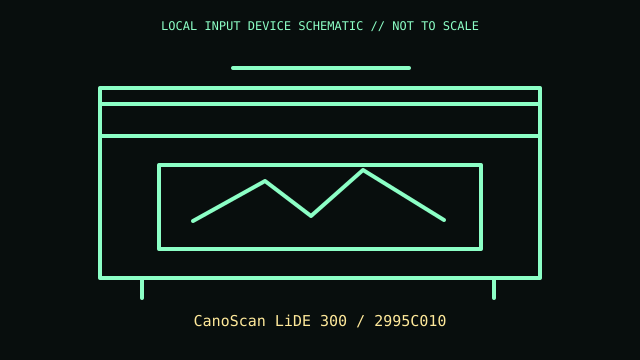

[ IMAGING AND AUDIO-CAPTURE PERIPHERALS // IDENTIFIED COMPONENT ]
Canon CanoScan LiDE 300
Compact flatbed CIS scanner with USB bus power and an expandable Z-lid.

MODEL IDENTIFICATION: CanoScan LiDE 300 / 2995C010. Confirm the printed SKU, revision, bundle, region, and included accessories before repair or compatibility claims.
Model specifications
| Catalog leaf | Imaging and audio-capture peripherals |
|---|---|
| Exact model / identifier | CanoScan LiDE 300 / 2995C010 |
| Mechanism and primary specifications | Optical resolution up to 2400 × 2400 dpi; CIS; USB 2.0 bus-powered; A4/Letter bed; Canon quotes about 10 sec/A4 color at 300 dpi in specified mode. |
| Compatibility and interface caveats | USB-powered and driver support varies by OS. Do not confuse LiDE 300 with LiDE 400 (4800 dpi); unit suffix varies by sales market. |
| Revision identification | Record the full label and software/firmware revision. Similar product-family names may use different protocols, components, connectors, or bundled accessories. |
Preservation and service
Clean glass with cloth rather than spray; preserve Z-lid hinge and transport locks if fitted; do not force carriage.
Separate observed condition and test setup from vendor-published specifications; record host OS, driver/app version, cables, adapters, and accessories.
Primary manufacturer sources
- Canon CanoScan LiDE 300 productManufacturer documentation; verify the exact SKU, revision, region, and accessories against the unit label.
- Canon LiDE 300 manuals and driversManufacturer documentation; verify the exact SKU, revision, region, and accessories against the unit label.
Manufacturer support pages can change; retain the applicable manual and its revision in the physical equipment record.